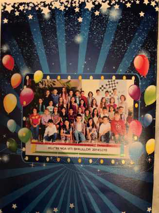
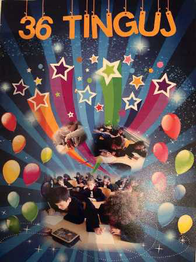

TEMATIKA 6: MEDIET4. Fletushka jonë (Veprimtari)
Lexo dhe mëso
Fletushkat janë të nevojshme për të shpjeguar ose për të dhënë informata e detaje për lexuesit.
Në fillim krijohet një përmbajtje e saj, ku shpjegohet shkurt se çfarë përmban fletushka. Kjo përmbajtje me tekst shkruhet me shkronja të mëdha, për ta lexuar edhe në largësi.
Shtohen figura interesante, që ngjallin kureshtje. P.sh., klasa e tretë dhe një figurë apo ilustrim që përfaqëson nxënësit e klasës, p.sh., 36 yje, lule, diej etj.
Pasi fletushka ideohet dhe realizohet sipas ideve tuaja, ajo vendoset në vende të dukshme ose shpërndahet dorazi te të tjerët.
Mos harroni: Fletushkat mund të përmbajnë vetëm aktivitetet më interesante gjatë vitit shkollor.
Ja disa modele fletushkash të realizuara nga klasa të ndryshme.


Suksese!